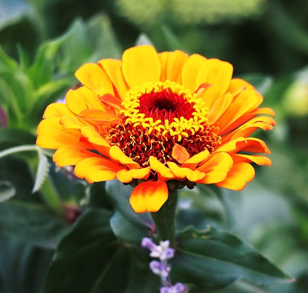
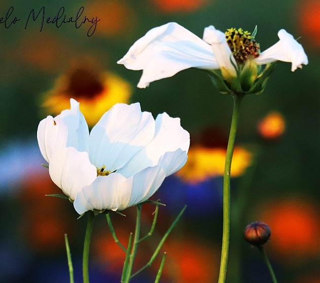
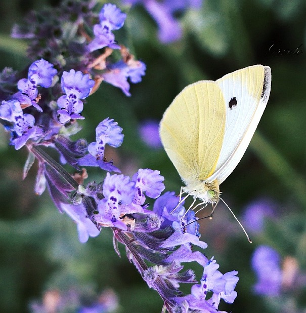
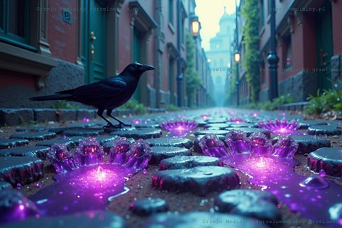
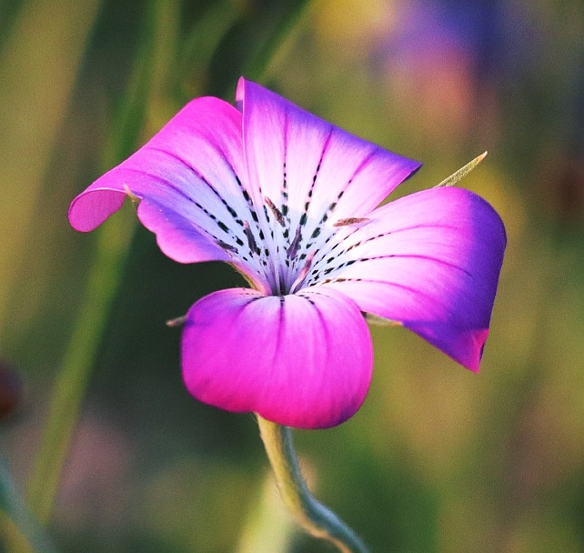
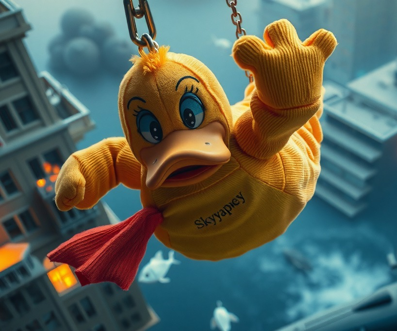
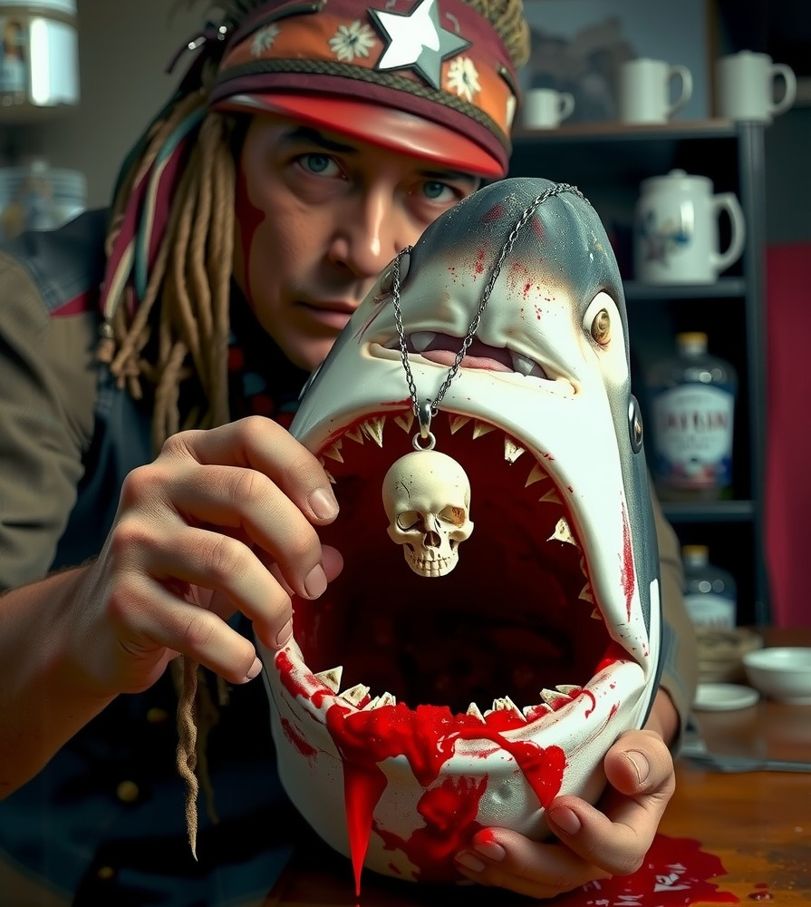
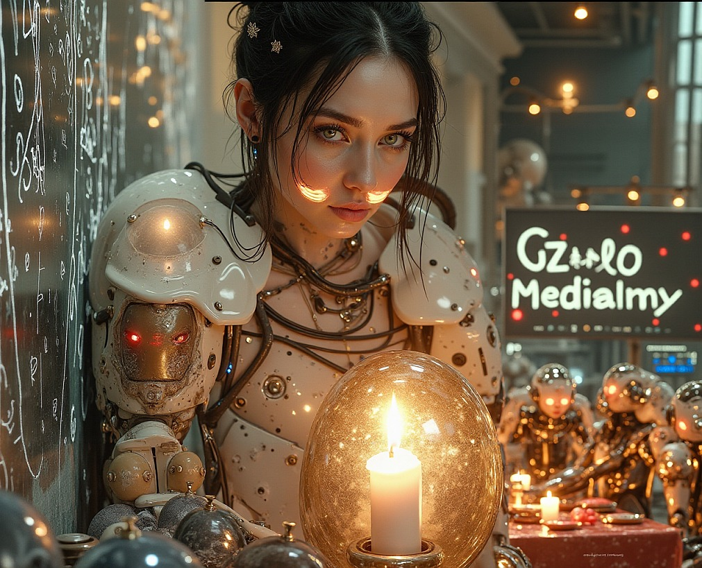

Grzelo Medialny
Odkrywaj świat poprzez obiektyw - gdzie każde zdjęcie opowiada historię,
każdy kadr niesie ze sobą emocje i niepowtarzalną atmosferę
Odkrywaj twórczą nieświadomość świata sztuki wizualnej i oryginalnej poezji.
Twórca | fotograf | poeta
Jestem fotografem, artystą wizualnym i pasjonatem eksploracji świata poprzez obiektyw. Specjalizuję się w różnorodnych formach fotografii - od surowego piękna street artu po subtelną elegancję portretów ludzi w ich naturalnym środowisku.
Fascynują mnie różnorodne formy wyrazu wizualnego - od portretów ludzi przez dokumentowanie życia ulicy, po odkrywanie piękna przyrody oraz fascynujących struktur świata przemysłowego. Każdy z tych obszarów oferuje mi nową perspektywę na otaczający nas świat.
Specjalizuję się w kilku kierunkach fotograficznych: dokumentuję życie ulicy i jego niepowtarzalne historie, portrtuję ludzi, odkrywam piękno przyrody oraz przemysłowe formy i struktury. Łączę tradycyjną fotografię z nowoczesnymi technikami, w tym eksperymentami z AI, tworząc unikalne kompozycje balansujące między rzeczywistością a wyobraźnią.





Tworzę innowacyjną poezję wizualną łącząc słowo z obrazem. Moje wiersze to podróż przez świat emocji, gdzie każda strofa maluje nowy krajobraz w wyobraźni czytelnika.
Poezja to dla mnie sposób na wyrażenie tego, co wykracza poza ramy fotografii - to obszar czystych emocji i abstrakcyjnych myśli.
Futurystyczna

AI Art
Abstrakcja

Cyfrowe

Czasem los doświadcza nas w najgorszy możliwy sposób. Pożar zniszczył budynek gospodarczy wraz z maszynami, narzędziami i plonami - całe życie legło w gruzach.
"Każda pomoc, nawet najmniejsza, przybliża nas do odbudowy. Razem możemy więcej."
Jako artysta i fotograf wierzę w siłę wspólnoty. Dokumentuję piękno, ale również dostrzegam trudne chwile. Dlatego chcę wykorzystać swoją platformę, by wspomóc kogoś w potrzebie.
Wesprzyj zbiórkę
Poznaj bogactwo moich prac fotograficznych i artystycznych w moim cyfrowym portfolio. Znajdziesz tutaj starannie wyselekcjonowane prace z różnych okresów mojej twórczości artystycznej.
Każde zdjęcie opowiada historię, każdy obraz niesie ze sobą emocje i niepowtarzalną atmosferę, zaprojektowane z myślą o wzbudzaniu refleksji i estetycznych doznań.
View Gallery